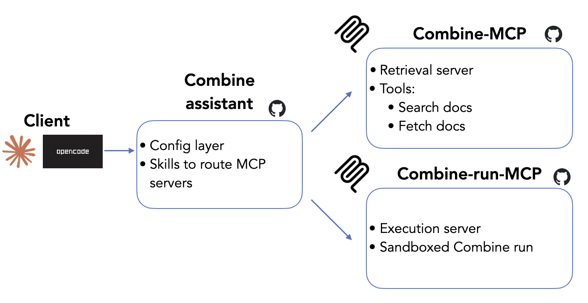
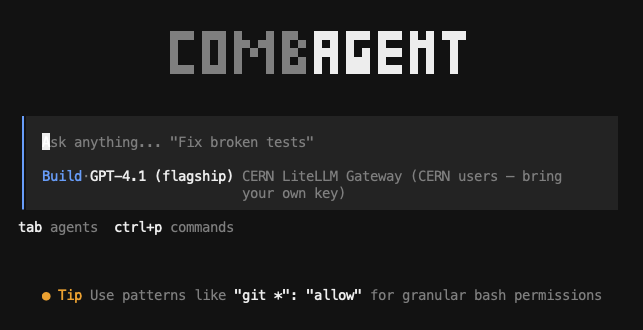

An AI Assistant for Combine
This tutorial introduces an AI assistant for Combine: a chat-based agent that answers Combine questions with citations to the real documentation, paper, source code, and forum, and that can run Combine commands to reproduce, diagnose, and confirm results.
It is meant to lower the barrier to using Combine. You can ask, in plain
language, "how do I set an upper limit on my signal strength?" or "why am I
getting this error from FitDiagnostics?", while keeping the answers grounded
in Combine's own sources rather than in a model's memory.
Experimental
This is a research prototype, not (yet) an official CMS tool. Always verify what it tells you against the linked sources, and review any command before you trust its output, especially for anything that affects a physics result.
How it is built
You do not need to understand the internals to use it, but a quick picture helps.

These are the main ingredients:
- The agent: the chat client you talk to. Two are supported: combagent (a lightweight terminal client, published on CVMFS so there is nothing to install on lxplus) and Claude Code (Anthropic's client, handy if you already use it locally).
- MCP servers: the "tools" the agent is allowed to call. There are two: a retrieval server that searches four Combine sources (the documentation, the Combine paper, the source code, and the cms-talk statistics forum), and an execution server that runs Combine commands.
- A skill: a short set of instructions that tells the agent how to use Combine: which source to consult for which kind of question, how to read the output, and to always cite what it found.
The retrieval server means the agent does not guess: when you ask a question, it searches the real sources and answers with links you can click to verify.
Running Combine: two paths
When you ask the agent to actually run something, it uses one of two paths, in order of preference.
-
Your own Combine environment (recommended). If you have
combineon yourPATH(i.e. you sourced a Combine environment before launching the agent) it simply runs Combine in your current working directory, against your real datacards, with no size limits. This is the main mode and the one this tutorial uses. -
A remote execution server (fallback). If Combine is not on your
PATH, the agent falls back to a shared execution server running on CERN's cloud (PaaS). It ships Combine itself and runs your command in an isolated sandbox, so it works even with no local Combine install. However, inputs are size-capped and timeouts are shorter, so it is best for quick checks rather than large or long fits.
Tip
For any real analysis work, use path 1: source your Combine environment first. You then get your real files, your real outputs, and no upload limits.
Choosing a model
The agent needs a large language model behind it. Several are pre-configured;
you pick one with the --model <provider>/<model> flag (or use the default).
| Provider | How to access | Notes |
|---|---|---|
litellm (default) |
A key from the CERN LiteLLM gateway | Recommended for CERN users. Data stays within CERN's governed gateway. |
anthropic |
Your own Anthropic API key | Claude models via the public API. |
nrp |
A free token from the National Research Platform | Open-weight models, free for researchers from American universities. |
cern-vm |
Nothing (self-hosted) | No key at all, but CPU-only and very slow — a last-resort fallback. |
For most CERN users the litellm provider is the right default.
If you don't have a subscription, a LiteLLM token can be obtained by subscribing to the e-group at this website https://gms.web.cern.ch/group/lumi-api-access.
The key can then be exported by typing:
export LITELLM_API_KEY=<your-key>
To switch model for a session, pass --model, e.g. to use the (slow,
no-key) self-hosted model:
opencode --model cern-vm/qwen2.5-coder:7b
Example 1: combagent on lxplus (main workflow)
This is the recommended way to use the assistant. Everything is on CVMFS, so there is nothing to install.
Step 1: source a Combine environment so that combine is on your PATH.
Use your own CMSSW area with Combine built in it (see the
installation instructions):
cd /path/to/CMSSW_14_1_0_pre4/src
cmsenv
cd /path/to/your/analysis # where your datacards live
Step 2: source the assistant setup. This puts the combagent client (our maintained fork of opencode) on
your PATH and wires in the Combine tools, skill, and model configuration:
source /cvmfs/cms-griddata.cern.ch/cat/sw/combine-assistant/latest/bin/setup.sh
export LITELLM_API_KEY=<your-key>
Step 3: launch the agent:
combagent
You should see the combagent banner, and you can start chatting.

Some things to try:
- "What does the
--robustFitoption do, and when should I use it?" — the agent searches the docs and answers with a link. - "Run an asymptotic upper limit on
datacard.txtand report the expected limit." — because you sourced Combine in step 1, it runscombine -M AsymptoticLimits datacard.txtin your directory and reports the result. - "I get
Error: ... covariance matrix ...from FitDiagnostics — what's going on?" — the agent checks the forum and code and proposes a fix.
Note
The litellm models and the self-hosted cern-vm require the CERN network (lxplus/SWAN, or
VPN).
Example 2: Claude Code, locally
If you already use Claude Code on your own machine, you can use the same Combine tools and skill from there.
Step 1: get the assistant configuration (it ships the tool registrations and the skill):
git clone https://github.com/maxgalli/combine-assistant.git
cd combine-assistant
Step 2: (optional) source a Combine environment in the same shell if you want commands to run against a local Combine install; otherwise the remote execution server is used automatically.
Step 3: launch Claude Code in that directory:
claude
Claude Code automatically registers the Combine retrieval and execution servers and discovers the skill, and it uses its own (Anthropic) model, so there is no separate model key to configure. You can then ask the same kinds of questions as above.
Tip
On a laptop with no Combine installed and no CERN network, the agent can still answer questions (retrieval works over the public sources) but cannot run Combine. Source a Combine environment, or use it from lxplus, to enable execution.
Where to go next
- Ask the agent itself how to do a specific task (that is what it is for).
- Cross-check its citations: every answer should point at the docs, paper, code, or forum. If it cannot find something, it will say so rather than guess.
- For the underlying Combine methods it drives, see the rest of these tutorials and the documentation home page.